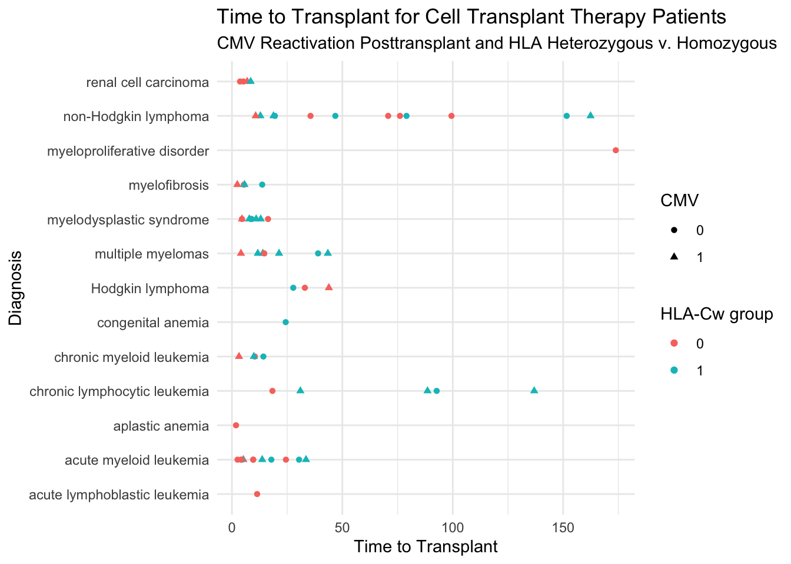

This data set contains 64 consecutive patients who underwent T-cell replete, matched sibling donor reduced-intensity conditioning allogeneic hematopoietic stem cell transplant. A number of demographic, baseline and transplant characteristics were also collected. The dataset is cleaned and relatively complete. There are no outliers or data problems.
The number of activating killer immunoglobulin-like receptors (aKIRs: 1-4 vs. 5-6)
Primary Outcome
The primary outcome is presence of and time to cytomegalovirus reactivation.
Background
Hematopoietic stem cell transplantation (HSCT) is the transplantation of multipotent hematopoietic stem cells, from bone marrow, peripheral blood, or umbilical cord blood. It is a medical procedure most often performed for patients with certain cancers of the blood or bone marrow, such as multiple myeloma or leukemia. Allogeneic HSCT involves two people: the (healthy) donor and the (patient) recipient. Allogeneic HSC donors must have a tissue (HLA) type that matches the recipient. In myeloablative allogeneic HSCT, chemotherapy or irradiation is given immediately prior to a transplant (the conditioning regimen) with the purpose of eradicating the patient’s disease prior to the infusion of HSC and to suppress immune reactions. The bone marrow can be ablated (destroyed) with dose- levels that cause minimal injury to other tissues. For many patients who are at high risk for transplant-related mortality with myeloablative allogeneic HSCT, reduced- intensity conditioning allogeneic hematopoietic stem cell transplant has proven effective. Although the reduced-intensity conditioning allogeneic HSCT may avoid many of the organ toxicities associated with myeloablative conditioning, the risk for developing graft-versus-host disease and infection including cytomegalovirus remains significant.
Cytomegalovirus (CMV) is a common virus that can infect almost anyone. Once infected, your body retains the virus for life. Most people don’t know they have CMV because it rarely causes problems in healthy people. But if pregnant or having a weakened immune system, CMV is cause for concern. For people with compromised immunity, such as after allogeneic HSCT, CMV infection can be fatal. Natural killer (NK) and T cells provide protection against CMV reactivation. The reactivity of NK cells and some T-cell subsets are regulated by the interaction of killer immunoglobulin-like receptors (KIRs) with target cell HLA class 1 molecules. The donor activating KIR genotype has been implicated as a contributing factor for CMV reactivation after myeloablative allogeneic HSCT.
Reference
Sobecks et al. “Cytomegalovirus Reactivation After Matched Sibling Donor Reduced-Intensity Conditioning Allogeneic Hematopoietic Stem Cell Transplant Correlates With Donor Killer Immunoglobulin-like Receptor Genotype”. Exp Clin Transplant 2011; 1: 7-13.
Data
The cytomegalovirus dataset contains many variables which are appropriately used as factors in R. These variables have categorical values or levels.
Number of donoractivating killer immunoglobulin-like receptors
21
cmv
cytomegalovirus reactivation posttransplant
0 = No; 1 = Yes
22
time to cmv
Time to cytomegalovirus reactivation
months
23
agvhd
Acute 2-4 graft versus host disease
0 = No; 1 = Yes
24
time to agvhd
Time to acute 2-4 graft versus host disease
months
25
cgvhd
Chronic graft versus host disease
0 = No; 1 = Yes
26
time to cgvhd
Time to chronic graft versus host disease
months
Data Visualization
In @fig-scatterplot below shows the distribution of time.to.transplant by diagnosis of 64 cell transplant therapy patients at the Cleveland Clinic.
Code
library(tidyverse)library(ggplot2)p=ggplot(data =cytomegalovirus)+aes_string(x =cytomegalovirus$time.to.transplant, y =cytomegalovirus$diagnosis)+geom_point(aes(color =C1_C2, shape =cmv))+labs(title ="Time to Transplant for Cell Transplant Therapy Patients", subtitle ="CMV Reactivation Posttransplant and HLA Heterozygous v. Homozygous", y ="Diagnosis", x ="Time to Transplant", color ="HLA-Cw group", shape ="CMV")+theme_minimal()plot(p)

Figure 1: Non-Hodgkin lymphoma and chronic lymphocytic leukemia show a trend of many more months beyond time of transplant than other indications.
Source Code
---title: "Retrospective Cohort Study of Myeloablative Allogeneic Hematopoietic Stem Cell Transplant."format: html: code-fold: true code-tools: true code-link: true---**Study Abstract**This data set contains 64 consecutive patients who underwent T-cell replete, matched sibling donor reduced-intensity conditioning allogeneic hematopoietic stem cell transplant. A number of demographic, baseline and transplant characteristics were also collected. The dataset is cleaned and relatively complete. There are no outliers or data problems.**Indications**```{r}library(medicaldata)unique(cytomegalovirus$diagnosis)```**Primary Risk Factor**The number of activating killer immunoglobulin-like receptors (aKIRs: 1-4 vs. 5-6)**Primary Outcome**The primary outcome is presence of and time to cytomegalovirus reactivation.**Background**Hematopoietic stem cell transplantation (HSCT) is the transplantation of multipotent hematopoietic stem cells, from bone marrow, peripheral blood, or umbilical cord blood. It is a medical procedure most often performed for patients with certain cancers of the blood or bone marrow, such as multiple myeloma or leukemia. Allogeneic HSCT involves two people: the (healthy) donor and the (patient) recipient. Allogeneic HSC donors must have a tissue (HLA) type that matches the recipient. In myeloablative allogeneic HSCT, chemotherapy or irradiation is given immediately prior to a transplant (the conditioning regimen) with the purpose of eradicating the patient's disease prior to the infusion of HSC and to suppress immune reactions. The bone marrow can be ablated (destroyed) with dose- levels that cause minimal injury to other tissues. For many patients who are at high risk for transplant-related mortality with myeloablative allogeneic HSCT, reduced- intensity conditioning allogeneic hematopoietic stem cell transplant has proven effective. Although the reduced-intensity conditioning allogeneic HSCT may avoid many of the organ toxicities associated with myeloablative conditioning, the risk for developing graft-versus-host disease and infection including cytomegalovirus remains significant.Cytomegalovirus (CMV) is a common virus that can infect almost anyone. Once infected, your body retains the virus for life. Most people don't know they have CMV because it rarely causes problems in healthy people. But if pregnant or having a weakened immune system, CMV is cause for concern. For people with compromised immunity, such as after allogeneic HSCT, CMV infection can be fatal. Natural killer (NK) and T cells provide protection against CMV reactivation. The reactivity of NK cells and some T-cell subsets are regulated by the interaction of killer immunoglobulin-like receptors (KIRs) with target cell HLA class 1 molecules. The donor activating KIR genotype has been implicated as a contributing factor for CMV reactivation after myeloablative allogeneic HSCT.**Reference**Sobecks et al. "Cytomegalovirus Reactivation After Matched Sibling Donor Reduced-Intensity Conditioning Allogeneic Hematopoietic Stem Cell Transplant Correlates With Donor Killer Immunoglobulin-like Receptor Genotype". Exp Clin Transplant 2011; 1: 7-13.**Data**The cytomegalovirus dataset contains many variables which are appropriately used as factors in R. These variables have categorical values or levels.```{r}cytomegalovirus$ID <-as.factor(cytomegalovirus$ID)cytomegalovirus$sex <-as.factor(cytomegalovirus$sex)cytomegalovirus$race <-as.factor(cytomegalovirus$race)cytomegalovirus$diagnosis <-as.factor(cytomegalovirus$diagnosis)cytomegalovirus$diagnosis.type <-as.factor(cytomegalovirus$diagnosis.type)cytomegalovirus$prior.radiation <-as.factor(cytomegalovirus$prior.radiation)cytomegalovirus$prior.chemo <-as.factor(cytomegalovirus$prior.chemo)cytomegalovirus$prior.transplant <-as.factor(cytomegalovirus$prior.transplant)cytomegalovirus$recipient.cmv <-as.factor(cytomegalovirus$recipient.cmv)cytomegalovirus$donor.sex <-as.factor(cytomegalovirus$donor.sex)cytomegalovirus$TBI.dose <-as.factor(cytomegalovirus$TBI.dose)colnames(cytomegalovirus)[names(cytomegalovirus) =="C1/C2"] <-"C1_C2"cytomegalovirus$`C1_C2`<-as.factor(cytomegalovirus$`C1_C2`)cytomegalovirus$aKIRs <-as.factor(cytomegalovirus$aKIRs)cytomegalovirus$cmv <-as.factor(cytomegalovirus$cmv)cytomegalovirus$agvhd <-as.factor(cytomegalovirus$agvhd)cytomegalovirus$cgvhd <-as.factor(cytomegalovirus$cgvhd)str(cytomegalovirus)```**Data Dictionary**```{r}dict <-read.delim("~/r/hsct-shiny/hsct_data_dictionary.tsv", sep ="\t")knitr::kable(dict)```**Data Visualization**In `@fig-scatterplot` below shows the distribution of `time.to.transplant` by `diagnosis` of 64 cell transplant therapy patients at the Cleveland Clinic.```{r}#| label: fig-scatterplot#| fig-cap: "Non-Hodgkin lymphoma and chronic lymphocytic leukemia show a trend of many more months beyond time of transplant than other indications."#| warning: falselibrary(tidyverse)library(ggplot2)p =ggplot(data = cytomegalovirus) +aes_string(x = cytomegalovirus$time.to.transplant, y = cytomegalovirus$diagnosis) +geom_point(aes(color = C1_C2, shape = cmv)) +labs(title ="Time to Transplant for Cell Transplant Therapy Patients",subtitle ="CMV Reactivation Posttransplant and HLA Heterozygous v. Homozygous",y ="Diagnosis", x ="Time to Transplant",color ="HLA-Cw group", shape ="CMV") +theme_minimal()plot(p)```